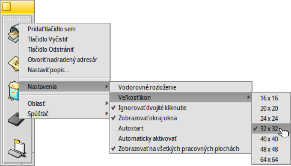

Preklad tejto stránky zatiaľ nie je dokončený. Dovtedy sa nedokončené časti zobrazia v anglickom origináli.
 Spúšťač
Spúšťač
| Panel: | ||
| Umiestnenie: | /boot/system/apps/LaunchBox | |
| Nastavenia: | ~/config/settings/LaunchBox/* |
Na organizáciu vašich obľúbených aplikácií alebo dokumentov môžete spustiť jeden alebo viac Spúšťačov. Sami sa rozhodnete, či sa má každý z nich zobraziť na všetkých alebo iba na aktuálnej ploche. Taktiež môže slúžiť na rýchle otváranie dokumentov v konkrétnej aplikácii. Napríklad môžete myšou pretiahnuť súbor HTML do textového editora v Spúšťači a otvoriť ho v tomto editore namiesto predvolenej aplikácie, ktorou je webový prehliadač.
Všetky nastavenia sú prístupné v kontextovom menu:
| Pridá prázdne tlačidlo. | |||
| Vyprázdni tlačidlo. | |||
| Odstráni tlačidlo. | |||
| Podržanie kurzora myši nad ikonou zobrazí tip s názvom súboru a v prípade aplikácie jej krátky popis ak sa líši od jej názvu (pozri téma Typy súborov). Pomocou tejto položky menu môžete prispôsobiť popis tohto tipu. | |||
Aligns the buttons horizontally. Sets the icon size between 16 and 64 pixel. Launches the object only once, even when you (accidentally) double-click. Shows the window border. Starts LaunchBox automatically on boot-up. LaunchBox pops up if the mouse is near the screen edge. Shows the LaunchBox on every workspace. | |||
Pridá novú oblasť. Naklonuje aktuálnu oblasť. Zatvorí aktuálnu oblasť. | |||
Ukončí všetky oblasti Spúšťača. |